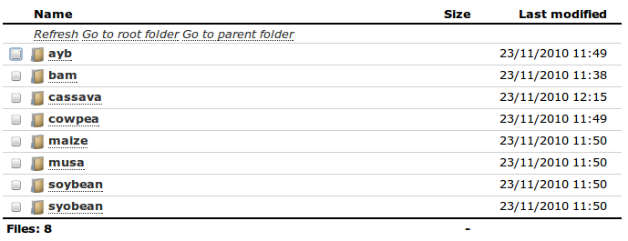

The Browse menu gives you access to files stored in application's data directory on the server. It allows you to navigate the directory structure and download files stored on the server.
Navigation through directories is fairly straightforward, clicking a folder will open that folder contents, clicking a file name will download the file from server to your computer.
 Browsing directories and files on server